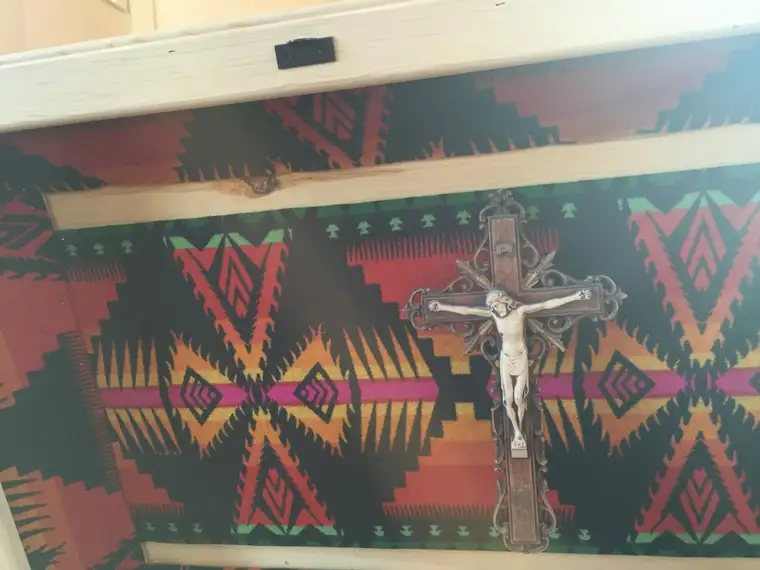
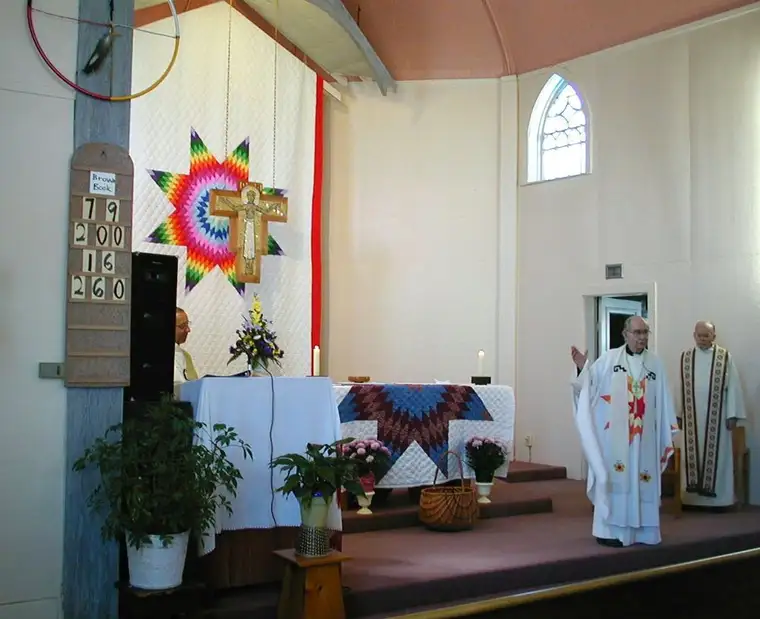

At his funeral Mass, he was named a spiritual giant, and despite his relatively small bodily stature, no one present would’ve argued it about the Rev. Bill Mehrkens.
During his March 3 burial, the unpretentiousness of this holy soul showed. “Just a plain, wooden casket?” my daughter had remarked at seeing the photo I’d sent by text from the event at Red Lake Reservation.
It didn’t take much to explain the starkness of Father Bill’s unembellished pine box, for Elizabeth had visited him with me a few years earlier at his assisted-living home in Bemidji, Minn., and while there, glimpsed his humble spirit.
Father Bill, 91 at the time, had gently coaxed Elizabeth away from the wall she was inclined to blend into as a shy teenager to discover her thoughts and leanings.
By then, you’d think he’d have tired of probing others’ minds. But, as someone at his wake mentioned, one of Father Bill’s most endearing qualities was that “he never quit asking people questions.”
No matter what other matter was at hand, and regardless of age, skin color or social status of the person before him, he’d always pause to look intently at them to learn what they were about.
“He made me feel like I was someone worth knowing,” the man at his wake had said, and you could tell it had changed him. He was far from alone in that.
Father Bill came into my life when I was a spiritually vulnerable college freshman, only faintly aware of God’s importance in my life. With his note-card sermons in hand, he approached the youthful congregation at the Newman Center at Moorhead State University in a peaceful but firm voice, and won our hearts.
Though impossible to adequately detail how adeptly he preached and lived the Gospel message of love, I can say that if not for Father Bill, this column wouldn’t exist. He drew me into the heart of Jesus with a life-altering force at a critical time.
His final years as a college chaplain were spent with us Moorhead students, and when I heard he’d be moving to Red Lake, I was elated. Father Bill’s concern for the underprivileged and forgotten was well-known, and he seemed a perfect match for reservation life.

A few years later, he told a friend he wanted to be buried next to the big wooden cross at the entrance of the Red Lake cemetery, near “his people.” He’d come home.
Arriving at the funeral at Red Lake, after taking in an earlier service at his former parish in Bemidji, we found we had enough time to linger a bit before the service began. Tired from an early morning, I wandered to the front of St. Mary’s Mission Church, its star-quilt-bedecked altar calling me, and curled into a pew near the body of my now eternally resting friend.
Quietly, I began to cry, as much in gratitude for everything he has given me as sadness. Spiritually speaking, he saved my life, and no amount of thanks is adequate to return that gift. My tears, like a prayer, would have to do.
Soon, a woman in a nearby pew slid over to comfort me. It was his niece Mary. Among other things, she shared about how her uncle, while riding his trike around at age 6, grasped a rosary and, swinging it like a lasso, announced emphatically, “Jesus, we’re going for a ride!”
What a wild ride it has been for Father Bill, who years ago founded a wilderness camp in northern Minnesota, and later, the Dorothy Day House for the homeless in Moorhead, despite the scrutinizing glances of some.
He would give the coat off his back to someone in need, and did, many times over.
Father Bill’s burial at Red Lake was of the Native tradition. Rather than holy oils to anoint his body, smudged smoke of burning sweetgrass was waved over it and throughout the sacred space.
After the body was properly honored inside, we processed to the cemetery, where our dear one was carried and carefully lowered into a freshly dug, rectangular cavity.
Several men climbed inside to pound nails into a wooden cover over the coffin — the unfolding of bed sheets. The rest of us were then invited to sprinkle the coffin with holy water and traditional tobacco, and help fill the remaining spaces with shoveled dirt — the smoothing and fluffing of blankets.
By the time we were done, the sun had dropped, and the floral spray had frozen, along with our toes. But we’d done it. Together we’d carried him as he had us, bringing our friend to his final resting place, and tucking him in for eternity.
It felt right and good.
Later, I studied the photo of the interior lid of his coffin with its beautiful, Native-themed lining and crucifix, remembering also the eagle feather and colorful vestments nestled inside.
I realized that though some might have seen a plain, unadorned box in gazing at Father Bill’s casket, like our friend himself, the true riches could only be discovered by looking within.
If only I might live to be as wealthy as Father Bill.
Rest in peace, beloved friend.
[For the sake of having a repository for my newspaper columns and articles, I reprint them here, with permission, a week after their run date. The preceding ran in The Forum newspaper on March 19 2016.]